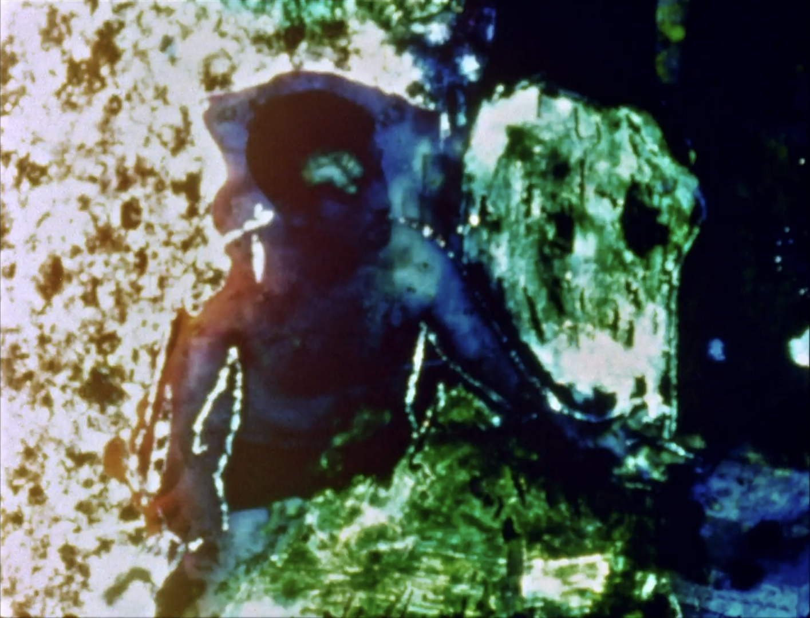
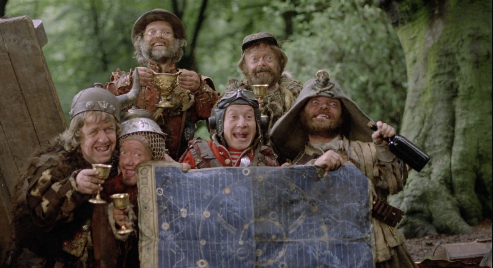
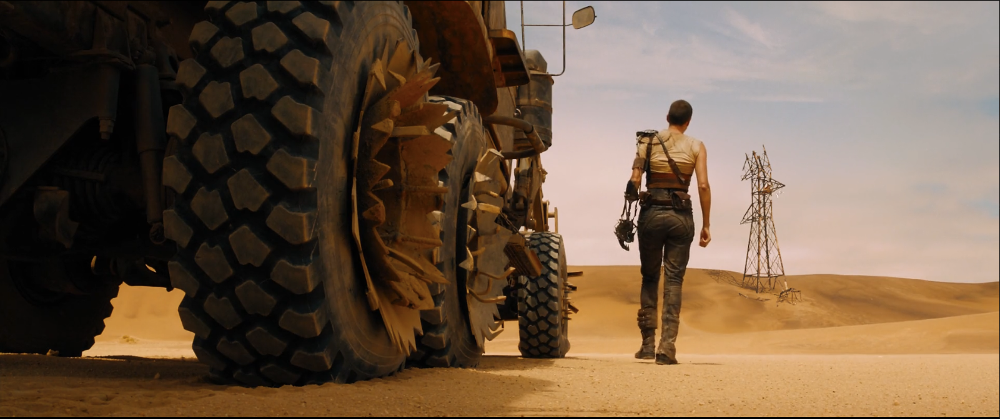

A Selection of Various Color Themes
Additional Information:
Presented below is a table featuring stills from enigmatic films I've recently enjoyed – coupled with color themes within each image – and how said theme reflects the deeper meanings within each film.
| Title | Image | Colors |
|---|---|---|
“Eye Myth” (1967)by Stan BrakhageThis iconic experimental film was hand-tinted by director Stan Brakhage and runs only nine seconds in length. Brakhage's work often explores the relationship between color
and perception, and this film is no exception. The colors in "Eye Myth" are not just decorative; they serve to enhance the emotional impact of the film, creating a sense of
wonder and introspection. It's color palette utilizes analogous colors which are represented in the blue-green, green, and blue-violet present in the chosen frame. |
 |
#CFC1A6 #B45638 #301629 #2C7346 #0F88A6 |
“The Friends of Eddie Coyle” (1973)by Peter YatesThis film is a gritty crime drama that explores the world of organized crime in Boston, starring Robert Mitchum in the title role. The color palette is dominated by muted
tones, reflecting back to us the bleak and sometimes oppressive atmosphere of the film, and emphasizing the moral ambiguity and desperation of the characters. But, not without
flashes of violence, represented here by the bright neon signage in what is the final image of the film. |
 |
#73333F #F4B7DC #74DDF6 #0C110B #511F1F |
“Bound for Glory” (1976)by Hal AshbyThis film is a biographical drama about the life of folk singer Woody Guthrie, starring David Carradine. The color palette is rich and warm, with lots of blues (both literally
and figuratively) and browns, evoking the nostalgia of the Great Depression era. The colors reflect the themes of hope and resilience in the face of hardship, as well as the beauty
of the American landscape. |
 |
#B5BBDD #7884AA #94715F #80594B #281916 |
“Time Bandits” (1981)by Terry GilliamThis film is a fantasy adventure that follows a young boy and a group of time-traveling dwarfs as they journey through history, encountering famous figures and seeking treasure.
The color palette is whimsical and surreal, with bold contrasts and vibrant hues that reflect the film's chaotic and imaginative tone. The use of reds, greens, and deep blues
emphasize the fantastical nature of the story and the sense of wonder and danger in their adventures. |
 |
#585D72 #9F7760 #688044 #5B4530 #9C1C1B |
“Mad Max: Fury Road” (2015)by George MillerThis film is a post-apocalyptic action film that follows Max Rockatansky and Furiosa as they escape from a tyrannical warlord, Immortan Joe. The color palette is dominated by
warm tones, with lots of oranges and yellows, reflecting the harsh desert landscape and the intensity of the action. Overall, the color palette in "Fury Road" is a key element in
conveying the film's themes of survival, resilience, and the struggle for freedom. |
 |
#894B17 #DDA066 #582101 #E4C2B7 #290703 |